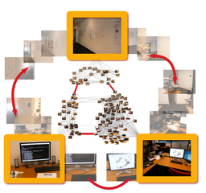

|

|
|
Abstract:
The widespread availability of digital cameras and ubiquitous Internet access have facilitated the creation of massive image collections. These collections can be highly interconnected through implicit links between image pairs viewing the same or similar objects. We propose building graphs called Image Webs to represent such connections. While earlier efforts studied local neighborhoods of such graphs, we are interested in understanding global structure and exploiting connectivity at larger scales. We show how to efficiently construct Image Webs that capture the connectivity in an image collection using spectral graph theory. Our technique can link together tens of thousands of images in a few minutes using a computer cluster. We also demonstrate applications for exploring collections based on global topological analysis.
|

![[PHOTO]](../../images/knight_small.png)